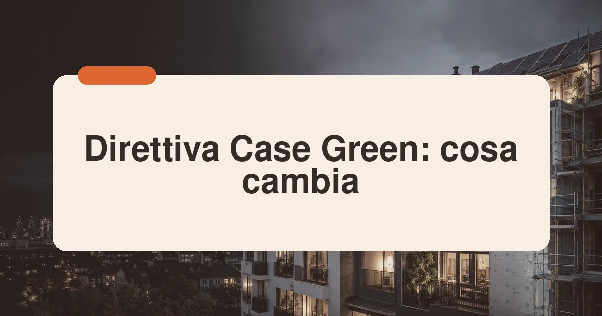

Cos'è la Direttiva Case Green
Con l'espressione Direttiva Case Green si indica comunemente la direttiva (UE) 2024/1275 sulla prestazione energetica nell'edilizia, nota come EPBD recast. È il pilastro edilizio del Green Deal europeo: gli edifici rappresentano circa il 40% dei consumi energetici dell'Unione e oltre un terzo delle emissioni, e la maggior parte del patrimonio esistente è stato costruito prima di qualsiasi norma energetica. La direttiva fissa il quadro entro cui gli Stati membri devono decarbonizzare case, uffici e scuole entro il 2050.
Il meccanismo è quello tipico delle direttive: Bruxelles fissa obiettivi e principi vincolanti, mentre gli strumenti concreti — requisiti minimi, incentivi, divieti — vengono definiti a livello nazionale. Per l'Italia, con un parco edilizio tra i più vecchi d'Europa (oltre la metà degli edifici precede il 1976), la partita dell'attuazione è particolarmente delicata e si intreccia con il sistema dei bonus fiscali.
Gli obiettivi e la tabella di marcia
La direttiva articola gli obiettivi su più binari temporali. La tabella riassume le scadenze principali rilevanti per imprese, progettisti e proprietari.
| Scadenza | Obiettivo | Ambito |
|---|---|---|
| Maggio 2026 | Recepimento della direttiva | Stati membri |
| 2028 | Edifici nuovi a emissioni zero (ZEB) | Edifici pubblici nuovi |
| 2030 | Edifici nuovi a emissioni zero | Tutti i nuovi edifici |
| 2030 | Riduzione indicativa dei consumi residenziali (-16%) | Patrimonio esistente |
| 2035 | Riduzione indicativa (-20/22%) | Patrimonio esistente |
| 2040 | Uscita graduale dalle caldaie a combustibile fossile | Traiettoria UE |
Per gli edifici esistenti la direttiva introduce lo strumento delle traiettorie nazionali di riqualificazione: ogni Paese deve presentare un piano che riduca progressivamente la prestazione energetica media del patrimonio, concentrando gli sforzi sugli edifici con le prestazioni peggiori. I dettagli — soglie, scadenze, incentivi — saranno definiti dai decreti attuativi italiani.
Sul piano del recepimento, il quadro italiano è in ritardo: la scadenza del 29 maggio 2026 è passata senza un decreto legislativo di attuazione e senza la presentazione del Piano Nazionale di Ristrutturazione degli Edifici, richiesto in bozza già entro fine 2025. La Commissione europea ha avviato procedure di infrazione nei confronti dell'Italia. Alcune misure anticipate sono comunque già legge: dal 2025, ad esempio, le detrazioni fiscali non coprono più le caldaie uniche a combustibili fossili, in coerenza con l'uscita graduale dagli impianti a fossile prevista dalla direttiva.
L'obbligo progressivo dei pannelli solari
Uno degli elementi più concreti della direttiva è l'introduzione di un obbligo scaglionato di installazione di impianti solari (fotovoltaici o termici), dove tecnicamente idoneo ed economicamente fattibile. La sequenza prevista parte dagli edifici pubblici esistenti e dai nuovi edifici pubblici, per estendersi ai nuovi edifici non residenziali, alle ristrutturazioni rilevanti e infine, entro il 2030, ai nuovi edifici residenziali.
Per le imprese installatrici e i progettisti questo si traduce in una domanda strutturale di integrazione solare in copertura, già visibile nella crescita del settore descritta nel nostro approfondimento su costi e permessi del fotovoltaico nel 2026. Le deroghe riguarderanno edifici vincolati, coperture con ombreggiamenti critici e casi di dimostrata sproporzione economica.

Cosa non cambia: le bufale da smontare
Attorno alla direttiva circolano letture errate che vale la pena correggere con chiarezza:
- Nessun divieto di vendita o affitto per le case energivore imposto direttamente da Bruxelles: la direttiva non contiene obblighi per i singoli cittadini.
- Nessuna scadenza 2030 per ristrutturare casa propria: il 2030 riguarda i nuovi edifici e gli obiettivi aggregati nazionali, non il singolo immobile.
- Le classi energetiche non diventano automaticamente titoli di esclusione: eventuali meccanismi nazionali saranno discussi in sede di recepimento, con ampi margini di gradualità.
Questo non significa che il mercato resti fermo: il valore degli immobili efficienti cresce, i finanziamenti verdi si diffondono — ne parliamo nell'articolo sui mutui green per la casa efficiente — e la certificazione energetica diventa sempre più centrale nelle transazioni, come dettagliato nella guida alla certificazione APE.
L'impatto su mercato, imprese e professionisti
Per la filiera delle costruzioni la direttiva disegna un quadro di domanda di lungo periodo: riqualificazioni dell'involucro, sostituzione dei generatori a fossile, integrazione solare e gestione intelligente degli impianti. I decreti attuativi italiani aggiorneranno i requisiti minimi di prestazione energetica per nuove costruzioni e ristrutturazioni, la normativa sulla certificazione APE e le regole per gli edifici a emissioni zero, ridefinendo di fatto lo standard di progetto.
Le incognite riguardano le risorse: il raggiungimento delle traiettorie richiede un flusso stabile di incentivi, dopo che la stagione del Superbonus ha mostrato sia la potenza sia i rischi fiscali delle agevolazioni massicce. La sfida del legislatore nazionale sarà trovare un equilibrio tra ambizione europea e sostenibilità dei conti, possibilmente con strumenti strutturali come crediti d'imposta mirati, deduzioni e finanza verde.
«La direttiva non entra in casa di nessuno con la forza, ma cambia il valore di tutte le case: nei prossimi dieci anni l'efficienza energetica sarà una variabile di prezzo, non solo di bolletta.»
La road map: le scadenze per l'Italia
La direttiva europea sulle «case green» (EPBD) fissa una traiettoria di decarbonizzazione del parco immobiliare con tappe progressive, che l'Italia recepisce con decreti nazionali. Il punto da capire è che la direttiva non fissa divieti immediati per i singoli edifici, ma obiettivi di sistema: gli Stati devono presentare piani nazionali di ristrutturazione che riducano progressivamente il consumo medio del patrimonio residenziale, con traguardi intermedi al 2030 e target al 2050 per un parco immobiliare decarbonizzato.
| Orizzonte | Cosa prevede la traiettoria europea | Impatto pratico per i proprietari |
|---|---|---|
| 2024-2026 | Recepimento nazionale e piani di ristrutturazione | Nessun obbligo immediato; si definiscono incentivi e standard |
| Verso il 2030 | Riduzione del consumo medio del residenziale, stop progressivo agli incentivi per caldaie a fossili autonome | Conviene anticipare gli interventi finché gli incentivi sono pieni |
| 2030-2040 | Rafforzamento degli standard minimi di prestazione per le fasce peggiori del patrimonio | Gli immobili energivori rischiano svalutazione crescente |
| 2050 | Parco immobiliare decarbonizzato | Le scelte impiantistiche di oggi devono essere coerenti con l'orizzonte elettrico |
La traduzione pratica per chi possiede un immobile: il rischio non è una multa improvvisa, ma la svalutazione progressiva degli edifici energivori — il «brown discount» già misurabile sul mercato — e il restringimento degli incentivi per le tecnologie a combustione. Chi riqualifica oggi si muove con il vento normativo a favore; chi rimanda si troverà a intervenire con incentivi più magri e vincoli più stretti.
Cosa fare oggi: la strategia per i proprietari
La strategia sensata per un proprietario nel 2026 si articola in tre mosse, in ordine. Prima mossa: conoscere il punto di partenza — un APE aggiornato con i consigli del certificatore costa poco e disegna la mappa degli interventi in ordine di efficacia: involucro, generatore, rinnovabili. Regole e costi nella nostra guida alla certificazione APE. Seconda mossa: pianificare per step — non serve fare tutto subito; serve una sequenza coerente, tipicamente infissi e coibentazioni prima, pompa di calore e fotovoltaico dopo, evitando gli errori di sequenza (generatore nuovo su involucro dispersivo, cappotto dopo aver rifatto gli impianti a parete).
Terza mossa: usare gli incentivi finché sono pieni. Nel 2026 il ventaglio è ancora generoso — Ecobonus al 50% sulla prima casa, bonus ristrutturazione, Conto Termico — ma la tendenza europea è alla riduzione progressiva e alla concentrazione sulle fasce deboli: la finestra attuale è tra le più favorevoli che ci si possa attendere. Le guide operative della redazione coprono ogni passaggio: l'Ecobonus, il cappotto termico, il confronto caldaia a condensazione o pompa di calore e il fotovoltaico sul tetto. Chi possiede immobili in classe F-G dovrebbe trattare la riqualificazione come una decisione patrimoniale, non solo energetica: la classe energetica sta entrando stabilmente nei criteri di valutazione di acquirenti, banche e assicurazioni.
Domande frequenti sulla Direttiva Case Green
Cos'è la Direttiva Case Green?
È la direttiva UE 2024/1275 sulla prestazione energetica degli edifici (EPBD), che fissa obiettivi di decarbonizzazione del parco immobiliare europeo: nuovi edifici a emissioni zero dal 2030 e traiettorie nazionali di riduzione dei consumi degli edifici esistenti.
La direttiva obbliga a ristrutturare casa propria?
No. La direttiva non impone obblighi diretti ai singoli proprietari: vincola gli Stati membri a definire piani nazionali di riqualificazione. Eventuali requisiti per gli edifici esistenti dipenderanno da come l'Italia attuerà la direttiva.
Quando sarà recepita in Italia?
La scadenza fissata dalla direttiva era il 29 maggio 2026, ma l'Italia non ha completato il recepimento entro quel termine e non ha presentato il Piano Nazionale di Ristrutturazione degli Edifici: la Commissione europea ha avviato procedure di infrazione. L'attuazione è attesa con decreti attuativi che aggiorneranno requisiti minimi, certificazione energetica e regole per i nuovi edifici.
Cosa prevede per i pannelli solari?
La direttiva introduce un obbligo progressivo di installazione solare: prima sugli edifici pubblici e su quelli nuovi o sottoposti a ristrutturazione rilevante, con scadenze scaglionate fino al 2030, compatibilmente con idoneità tecnica ed economica.
Le case in classe G diventeranno invendibili?
Nessun divieto di vendita: il rischio è economico — sconti crescenti, vendite più lente, credito più selettivo sugli energivori. La riqualificazione difende il valore, non è un obbligo.
Ci saranno incentivi per adeguarsi alla direttiva?
Sì: Ecobonus, bonus ristrutturazione e Conto Termico sono già operativi, ma la tendenza è a ridurre le aliquote nel tempo: intervenire prima conviene.
Fonti: Direttiva (UE) 2024/1275 del Parlamento europeo e del Consiglio; Commissione europea — schede sul pacchetto "Pronti per il 55%"; Ministero dell'Ambiente e della Sicurezza Energetica — lavori di recepimento. Contenuto a scopo informativo: fare riferimento ai testi ufficiali e ai decreti attuativi nazionali.